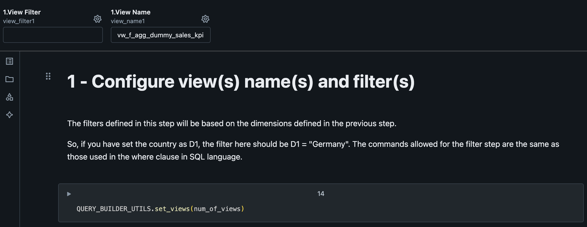
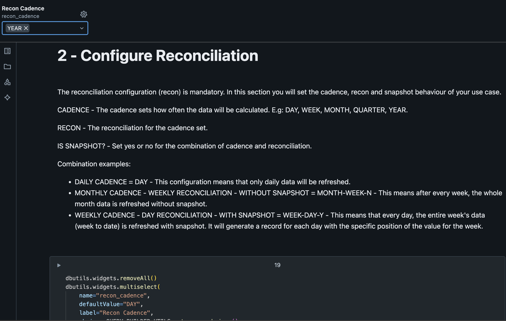
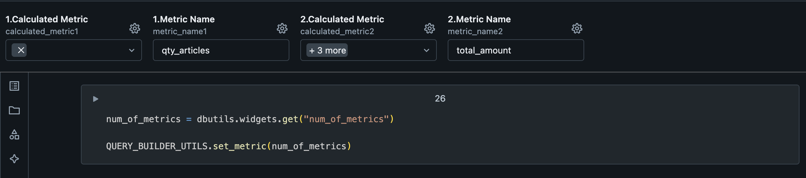
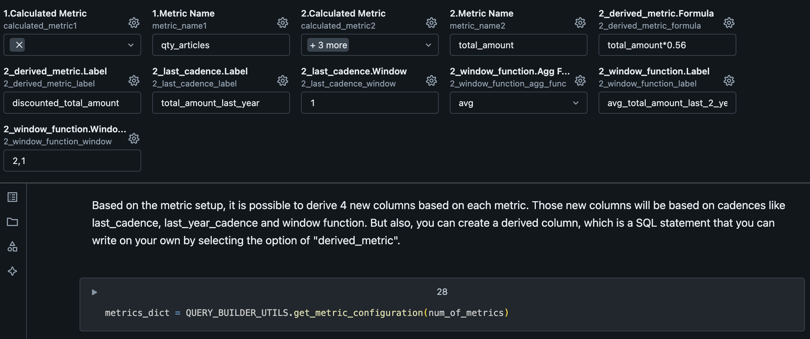
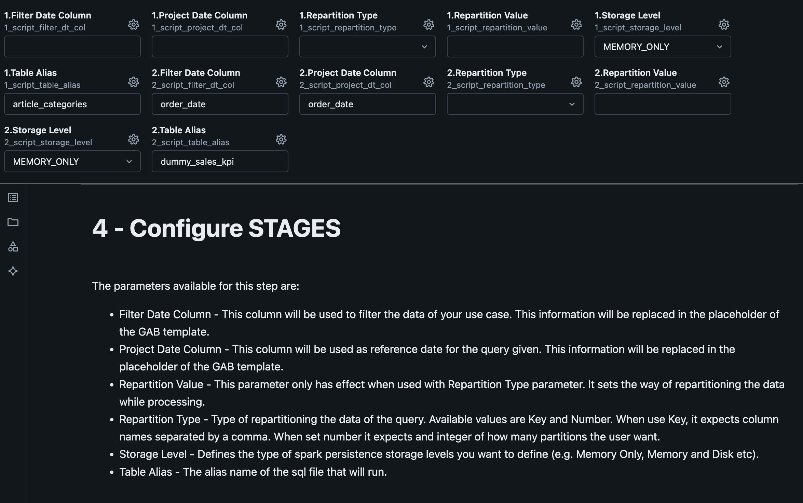

GAB Step-by-Step¶
Note
Requirements: Lakehouse engine: 1.20.0+
1. Setup Data Product based on Templated Files¶
- Copy GAB assets from the templated files to your data product:
- GAB Tables:
- GAB Notebooks:
2. Set up the Use Case¶
2.1. Create the SQL Template Files¶
Start by writing the SQL code for your use case. Here's an example where you will find several available placeholders (more on that below):
SELECT
({{ project_date_column }} + interval '{{ offset_value }}' hour) AS order_date, # date aggregation: computed cadence start date
{{ to_date }} AS to_date, # date aggregation: last day of the cadence or of the snapshot if enabled
b.category_name,
COUNT(a.article_id) qty_articles,
SUM(amount) total_amount
FROM
{{ database }}.dummy_sales_kpi a # source database
{{ joins }} # calendar table join: used to compute the cadence start and end date
LEFT JOIN
article_categories b ON a.article_id = b.article_id
WHERE
{{ partition_filter }} # filter: partition filter
AND
TO_DATE({{ filter_date_column }}, 'yyyyMMdd') >= (
'{{ start_date }}' + interval '{{ offset_value }}' hour
) # filter by date column configured in the use case for this file and timezone shift
AND
TO_DATE({{ filter_date_column }}, 'yyyyMMdd') < (
'{{ end_date }}' + interval '{{ offset_value }}' hour
) # filter by date column configured in the use case for this file and timezone shift
GROUP BY 1,2,3
Available SQL Template Placeholders¶
You can use placeholders in your SQL queries to have them replaced at runtime by the GAB engine. There are several available placeholders that will be listed in this section.
Warning
The placeholder value will always be injected as per the configurations of the use cases in the lkp_query_builder table.
Reference Dates¶
-
Start and End Dates:
-
{{ start_date }}and{{ end_date }}are the dates that control the time window of the current GAB execution. These can be used to execute GAB on a certain schedule and have it incrementally compute the aggregated metrics. These dates are fundamental to control GAB executions and will be provided as arguments in the GAB notebook. -
Warning
Currently only past and present dates are supported. Future dates are not supported.
-
-
Project Date:
-
{{ project_date_column }}is the reference date used to compute the cadences and the extended window (together with{{ start_date }}and{{ end_date }}).-
Note
Thereplace_offset_valueis a flag that has the responsibility to instruct GAB to either directly use the{{ project_date_column }}or shift it to the specified timezone according to the providedoffset_valuefrom the configured use case.
-
-
-
To Date:
{{ to_date }}is the last date of the cadence, if snapshots are disabled, or, if snapshots are enabled, then this date is the snapshot end date.
Filter Placeholders¶
{{ partition_filter }}the expression to filter the data according to a date partitioning scheme (year/month/day) and it replaces the placeholder with a filter likeyear = **** and month = ** and day = **:-
Warning
if your table does not have the Year, Month, Day columns you should not add this template
-
-
{{ filter_date_column }}and{{ offset_value }}can be used to filter the data to be processed on your use case to be between the specified time range:
Source Database¶
From where the data comes from: {{ database }}.
Dim Calendar join¶
Represented by the {{ joins }} placeholder.
Warning
It is mandatory! Can be added after any of the table names in the from statement. The framework renders these joins with an internal calendar join and populates the to_date and the project_date_column as per the configured cadences.
Combining Multiple SQL Template Files for a Use Case¶
For each use case, you can have just one SQL file or have multiple SQL files that depend on each other and need to be executed in a specific order.
If there's just one SQL file for the use case¶
The file should start with 1_. Example: 1_xxxx.sql.
When the use case has several SQL files¶
The different files will represent different intermediate stages/temp tables in GAB execution of the use case. Create the SQL files according to the sequence order (as shown in the image below) and a final combined script, example:

Note
We suggest using the folder metadata/gab to use as the SQL use case folder but this is a parametrized property that you can override with the property gab_base_path in the GAB notebook. This property is used in the GAB Job Manager as well.
2.2. Configure the Use Case using the Query Builder Helper Notebook¶
GAB will pull information from lkp_query_builder in order to retrieve information/configuration to execute the process. To help you on this task you can use the query_builder_help notebook. In this section, we will go step-by-step in the notebook instructions to configure a use case.
2.2.1. General Configuration¶

| Variable | Default Value | Description |
|---|---|---|
| Complexity | Low | Defines the complexity of your use case. You should mainly consider the volume of the data or the complexity of the SQL potentially generating a high load. Possible values: Low, Medium and High. These values are used GAB's orchestration, i.e., GAB job manager - gab_job_manager, which uses it to define the job cluster size/type based on the complexity of the query. |
| Database Name | example_database | Refers to the name of the development environment database where the lkp_query_builder table resides. This parameter is used at the end of the notebook to insert data into the lkp_query_builder table. |
| How many dimensions | 1 | Number of dimension columns expected in the use case. Note: Do not consider the project_date_column or metrics, as they have their own parameters. |
| How many views | 1 | Defines how many output views to generate for the use case. It's possible to have as many as the use case needs. All views will have the same structure (dimensions and metrics), the only difference possible to specify between the views is the view filter.Default value is 1. Note: This configuration has a direct impact in the 3. Configure View Name and Filters configuration. |
| Is Active | Y | Flag to make the use case active or not. Default value is Y. |
| Market | GLOBAL | Used in the gab_job_manager to execute the use cases for each market. If your business does not have the concept of Market, you can leave the GLOBAL default. |
| SQL File Names | 1_article_category.sql, 2_f_agg_dummy_sales_kpi.sql |
Name of the SQL files used in the use case, according to what you have configured in step 2.1. You can combine different layers of dependencies between them as shown in the example above, where the 2_combined.sql file depends on 1_product_category.sql file. The file name should follow the pattern x_file_name (where x is an integer digit) and should be separated by a comma (e.g.: 1_first_query.sql, 2_second_query.sql). |
| Snapshot End Date | to_date | This parameter is used in the template, by default its value must be to_date. You can change it if you have managed this in your SQL files. The values stored in this column depend on the use case behavior:
|
| Timezone Offset | 0 | The timezone offset that you want to apply to the the date columns (project_date_column or filter_date_column).It should be a number to decrement or add to the date (e.g., -8 or 8). The default value is 0, which means that, by default, no timezone transformation will be applied to the date. |
| Use Case Name | f_agg_dummy_sales_kpi | Name of the use case. The suggestion is to use lowercase and underlined alphanumeric characters. |
| Use Case Reference Date | order_date | Reference date of the use case, i.e., project_date_column.The parameter should be the column name and the selected column should have the date/datetime format. |
| Week Start | MONDAY | The start of the business week of the use case. Possible values: SUNDAY or MONDAY. |
2.2.2. Configure Dimension Names¶

2.2.3. Configure View Name and Filters¶
This will be the name of the output view at the end of the process. Filters can be applied at this step, if needed.

| Variable | Default Value | Description |
|---|---|---|
| View Filter | A SQL WHERE clause expression based on the dimensions defined in the previous step. Example: if you have set the country as D1, the filter here could be D1 = "Germany". The syntax allowed here is the same as the syntax of the WHERE clause in SQL. |
|
| View Name | vw_f_agg_dummy_sales_kpi | Name of the view to query the resulting aggregated data. This will contain the results produced by GAB for the configured use case. |
2.2.4. Configure the Cadence, Reconciliation and Snapshot¶
This step is where we define which will be the cadence displayed at the view.

| Variable | Default Value | Description |
|---|---|---|
| Reconciliation Cadence | YEAR | Compute the data aggregated by the specified cadence, optionally defined with reconciliation and snapshotting. Check more about it here. |
2.2.5. Configure METRICS¶
First question to ask regarding metrics is how many metrics do you have on our SQL use case query. On our template we have two metrics (qty_articles and total_amount).


Next, we will define if we want GAB to create secondary calculations for us based on the metric name.
Warning
Metrics should follow the same order as defined on the SQL use case query.

| Variable | Description |
|---|---|
| Calculated Metric | It's possible to derive (add secondary calculations) 4 new columns based on each metric. Those new columns will be based on cadences like last_cadence, last_year_cadence and window function. Moreover, you can create a derived column, which is a custom SQL statement that you can write by selecting the derived_metric option. |
| Metric Name | Name of the base metric. Should have the same name as on the SQL use case query in the SQL template files defined previously. |
After that, it's where you configure secondary calculations.

| Variable | Description |
|---|---|
| derived_metric.Formula | Formula to calculate the metric referring any of previous configured metrics by the Metric Name. Example: total_amount*0.56 |
| derived_metric.Label | Name of the generated metric by derived_metric. |
| last_cadence.Label | Name of the generated metric by last_cadence. |
| last_cadence.Window | Cadence lookback window, which means in this example, a lookback from the previous year (as the use case is on YEARLY cadence) |
| window_function.Agg Func | SQL Function to calculate the metric. Possible values: sum, avg, max, min, count |
| window_function.Label | Name of the generated metric by window_function. |
| window_function.Window Interval | Window interval to use on the metric generation. |
2.2.6. Configure Stages¶
Stages are related to each SQL file in the use case.

| Variable | Description |
|---|---|
| Filter Date Column | It will be used to filter the data of your use case. This information will be replaced in the placeholder of the GAB template {{ filter_date_column }}. |
| Project Date Column | It will be used as reference date for the given query. This information will be replaced in the placeholder of the GAB template {{ project_date_column }}. |
| Repartition Type | Type of repartitioning of the data of the query. Possible values: Key and Number. When you use Key, it expects column names separated by a comma. When you use Number, it expects an integer of how many partitions the user wants. |
| Repartition Value | This parameter only has effect when used with Repartition Type parameter. It sets the value for the repartitioning type set by the parameter above selected. |
| Storage Level | Defines the Spark persistence storage level you want (e.g. Memory Only, Memory and Disk etc). |
| Table Alias | The alias of the SQL file that will be executed. This name can be used to consume the output of a SQL stage (corresponding to a SQL file) in the next stage (the next SQL file). |
2.2.7. Build and Execute the SQL Commands to populate the lkp_query_builder Table¶


After configuring the use case, it would generate a SQL command to create it on the lkp_query_builder:
DELETE FROM example_database.lkp_query_builder WHERE QUERY_LABEL = 'f_agg_dummy_sales_kpi';
INSERT INTO example_database.lkp_query_builder VALUES (
1,
'f_agg_dummy_sales_kpi',
'GLOBAL',
"""{
'vw_f_agg_dummy_sales_kpi': {
'dimensions': {
'from_date': 'order_date',
'to_date': 'to_date',
'd1': 'category_name'
},
'metric': {
'm1': {
'metric_name': 'qty_articles',
'calculated_metric': {},
'derived_metric': {}
},
'm2': {
'metric_name': 'total_amount',
'calculated_metric': {
'last_cadence': [
{
'label': 'total_amount_last_year',
'window': '1'
}
],
'window_function': [
{
'label': 'avg_total_amount_last_2_years',
'window': [2, 1],
'agg_func': 'avg'
}
]
},
'derived_metric': [
{
'label': 'discounted_total_amount',
'formula': 'total_amount*0.56'
}
]
}
},
'filter': {}
}
}""",
"""{
'1': {
'file_path': 'f_agg_dummy_sales_kpi/1_article_category.sql',
'table_alias': 'article_categories',
'storage_level': 'MEMORY_ONLY',
'project_date_column': '',
'filter_date_column': '',
'repartition': {}
},
'2': {
'file_path': 'f_agg_dummy_sales_kpi/2_f_agg_dummy_sales_kpi.sql',
'table_alias': 'dummy_sales_kpi',
'storage_level': 'MEMORY_ONLY',
'project_date_column': 'order_date',
'filter_date_column': 'order_date',
'repartition': {}
}
}""",
"""{'YEAR': {}}""",
'0',
'MONDAY',
'Y',
'Low',
current_timestamp()
)
3. Use case execution¶
After the initial setup and adding your use case to the lkp_query_builder you can schedule the gab_job_manager to manage the use case execution in any schedule you want.
You can repeat these steps for each use case you have.
4. Consuming the data¶
The data is available in the view you specified as output from the use case in step 2, so you can normally consume the view as you would consume any other data asset (e.g., Report, Dashboard, ML model, Data Pipeline).